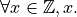

5. Pure Functional Programming as Runnable Mathematics¶
What we’d really like would be a language that gives us everything: the expressiveness and the safety of mathematical logic (there’s no concept of a memory in logic, and thus no possibility for unexpected interactions through or aliasing of memory), with the efficiency and interactivity of imperative code. Sadly, there is no such language.
Fortunately, there is an important point in the space between these extremes: in what we call pure functional, as opposed to imperative, programming languages. Pure functional languages are based not on commands that update memories and perform I/O, but on the definition of functions and their application to data values. The expressiveness of such languages is high, in that code often directly refects the mathematical definitions of functions. And because there is no notion of an updateable (mutable) memory, aliasing and interactions between far-flung parts of programs through global variables simply cannot happen. Furthermore, one cannot perform I/O in such languages. These languages thus provide far greater safety guarantees than imperative languages. Finally, unlike mathematical logic, code in functional languages can be run with reasonable efficiency, though often not with the same efficiency as in, say, C++.
In this chapter, you will see how functional languages allow one to implement runnable programs that closely mirror the mathematical definitions of the functions that they implement.
5.1. The identify function (for integers)¶
An identity function is a function whose values is simply the value of the argument to which it is applied. For example, the identify function applied to an integer value, x, just evaluates to the value of x, itself. In the language of mathematical logic, the definition of the function would be written like this.

In English, this would be pronounced, “for all ( )
values, x, in (
)
values, x, in ( ) the set of integers
(
) the set of integers
( ), the function simply reduces to value of x,
itself. The infinite set of integers is usually denoted in
mathematical writing by a script or bold Z. We will use that
convention in these notes.
), the function simply reduces to value of x,
itself. The infinite set of integers is usually denoted in
mathematical writing by a script or bold Z. We will use that
convention in these notes.
While such a mathematical definition is not “runnable”, we can implement it as a runnable program in pure functional language. The code will then closely reflects the abstract mathematical definition. And it will run! Here’s an implementation of id written in the functional sub-language of Dafny.
function method id (x: int): int { x }
The code declares id to be what Dafny calls a “function method”, which indicates two things. First, the function keyword states that the code will be written in a pure functional, not in an imperative, style. Second, the method keyword instructs the compiler to produce runnable code for this function.
Let’s look at the code in detail. First, the name of the function is
defined to be id. Second, the function is defined to take just one
argument, x, declared of type int. The is the Dafny type whose
values represent integers (negative, zero, and positive whole number)
of any size. The Dafny type int thus represents (or implements)
the mathematical set,  , of all integers. The int
after the argument list and colon then indicates that, when applied to
an int, the function returns (or reduces to) a value of type int.
Finally, within the curly braces, the expression x, which we call
the body of this function definition, specifies the value that this
function reduces to when applied to any int. In particular, when
applied to avalue, x, the function application simply reduces to the
value of x itself.
, of all integers. The int
after the argument list and colon then indicates that, when applied to
an int, the function returns (or reduces to) a value of type int.
Finally, within the curly braces, the expression x, which we call
the body of this function definition, specifies the value that this
function reduces to when applied to any int. In particular, when
applied to avalue, x, the function application simply reduces to the
value of x itself.
Compare the code with the abstract mathematical definition and you will see that but for details, they are basicaly isomorphic (a word that means identical in structure). It’s not too much of a stretch to say that pure functional programs are basically runnable mathematics.
Finally, we need to know how expressions involving applications of this function to arguments are evaluated. They fundamental notion at the heart of functional programming is this: to evaluate a function application expression, such as id(4), you substiute the value of the argument (here 4) for every occurence of the argument variable (here x) in the body of the function definition, the you evaluate that expression and return the result. In this case, we substite 4 for the x in the body, yielding the literal expression, 4, which, when evaluated, yeilds the value 4, and that’s the result.
5.2. Data and function types¶
Before moving on to more interesting functions, we must mention the
concepts of types and values as they pertain to both data and
functions. Two types appear in the example of the id function. The
first, obvious, one is the type int. The values of this type are
data values, namely values representing integers. The second type,
which is less visible in the example, is the type of the the function,
id, itself. As the function takes an argument of type int and also
returns a value of type int, we say that the type of id is
 . You can pronounce this type as int to
int.
. You can pronounce this type as int to
int.
5.3. Other function values of the same type¶
There are many (indeed an uncountable infinity of) functions that
convert integer values to other integer values. All such functions
have the same type, namely , but they
constitute different function values. While the type of a function
is specified in the declaration of the function argument and return
types, a function value is defined by the expression comprising the
body of the function.
An example of a different function of the same type is what we will
call inc, short for increment. When applied to an integer value,
it reduces to (or returns) that value plus one. Mathematically, it
is defined as  . For example,
inc(2) reduces to 3, and inc(-2), to -1.
. For example,
inc(2) reduces to 3, and inc(-2), to -1.
Here’s a Dafny functional program that implements this function. You should be able to understand this program with ease. Once again, take a moment to see the relationship between the abstract mathematical definition and the concrete code. They are basically isomorphic. The pure functional programmer is writing runnable mathematics.
function method inc (x: int): int { x + 1 }
Another example of a function of the same type is, square, defined
as returing the square of its integer argument. Mathematically it is
the function,  . And here is
a Dafny implementation.
. And here is
a Dafny implementation.
function method h (x: int): int { x * x }
Evaluating expressions in which this function is applied to an argument happens as previously described. To evaluate square(4), for example, you rewrite the body, x * x, replacing every x with a 4, yielding the expression 4 * 4, then you evaluate that expression and return the result, here 16. Function evaluation is done by substituting actual parameter values for all occurrences of corresponding formal parameters in the body of a function, evaluating the resulting expression, and returning that result.
Recursive function definitions and implementations =================================================+
Many mathematical functions are defined recursively. Consider the familiar factorial function. An informal explanation of what the function produces when applied to a natural number (a non-negative integer), n, is the product of natural numbers from 1 to n.
That’s a perfectly understandable definition, but it’s not quite precise (or even correct) enough for a mathematician. There are at least two problems with this definition. First, it does not define the value of the function for all natural numbers. In particular, it does not say what the value of the function is for zero. Second, you can’t just extend the definition by saying that it yields the product of all the natural numbers from zero to n, because that is always zero!
Rather, if the function is to be defined for an argument of zero, as we require, then we had better define it to have the value one when the argument is zero, to preserve the product of all the other numbers larger than zero that we might have multiplied together to produce the result. The trick is to write a mathematical definition of factorial in two cases: one for the value zero, and one for any other number.

To pronounce this mathematical definition in English, one would say that for any integer, n, such that n is greater than or equal to zero, factorial(n) is one if n is zero and is otherwise n times factorial(n-1).
Let’s analyze this definition. First, whereas in earlier examples we left mathematical definitions anonymous, here we have given a name, factorial, to the function, as part of its mathematical definition. We have to do this because we need to refer to the function within its own definition. When a definition refers to the thing that is being defined, we call the definition recursive.
Second, we have restricted the domain of the function, which is to
say the set of values for which it is defined, to the non-negative
integers only, the set known as the natural numbers. The function
simply isn’t defined for negative numbers. Mathematicians usually use
the symbol,  for this set. We could have written
the definition a little more concisely using this notation, like this:
for this set. We could have written
the definition a little more concisely using this notation, like this:

Here, then, is a Dafny implementation of the factorial function.
function method fact(n: int): int
requires n >= 0 // for recursion to be well founded
{
if (n==0) then 1
else n * fact(n-1)
}
This code exactly mirrors our first mathematical definition. The
restriction on the domain is expressed in the requires clause of the
program. This clause is not runnable code. It’s a specification: a
predicate (a proposition with a parameter) that must hold for the
program to be used. Dafny will insist that this function only ever be
applied to values of n that have the property of being  . A predicate that must be true for a program to be run is called a
pre-condition.
. A predicate that must be true for a program to be run is called a
pre-condition.
To see how the recursion works, consider the application of factorial to the natural number, 3. We know that the answer should be 6. The evaluation of the expression, *factorial(3), works as for any function application expression: first you subsitute the value of the argument(s) for each occurrence of the formal parameters in the body of the function; then you evaluate the resulting expression (recursively!) and return the result. For factorial(3), this process leads through a sequence of intermediate expressions as follows (leaving out a few details that should be easy to infer):
![factorial\ (3) & \text{ ; a function application expression}
if\ (3 == 0)\ then\ 1\ else\ (3 * factorial\ (3-1)) & \text{ ; expand body with parameter/argument substitution}
if\ (3 == 0)\ then\ 1\ else\ (3 * factorial\ (2)) & \text{ ; evaluate $(3-1)$}
if\ false\ then\ 1\ else\ (3 * factorial\ (2)) & \text{ ; evaluate $(3==0)$ }
(3 * factorial\ (2)) & \text{ ; evaluate $ifThenElse$ }
(3 * (if\ (2==0)\ then\ 1\ else\ (2 * factorial\ (1))) & \text{ ; etc }
(3 * (2 * factorial\ (1))
(3 * (2 * (if\ (1==0)\ then\ 1\ else\ (1 * factorial\ (0)))))
(3 * (2 * (1 * factorial\ (0))))
(3 * (2 * (1 * (if\ (0==0)\ then\ 1\ else\ (0 * factorial\ (-1))))))
(3 * (2 * (1 * (if\ true\ then\ 1\ else\ (0 * factorial\ (-1))))))
(3 * (2 * (1 * 1)))
(3 * (2 * 1))
(3 * 2)
6](_images/math/5261b0511d8e6a62ea5487c8c72731308867df69.png)
The evaluation process continues until the function application expression is reduced to a data value. That’s the answer!
It’s important to understand how recursive function application expressions are evaluated. Study this example with care. Once you’re sure you see what’s going on, go back and look at the mathematical definition, and convince yourself that you can understand it without having to think about unrolling of the recursion as we just did.
Finally we note that the the precondition is essential. If it were not there in the mathematical definition, the definition would not be what mathematicians call well founded: the recursive definition might never stop looping back on itself. Just think about what would happen if you could apply the function to -1. The definition would involve the function applied to -2. And the definition of that would involve the function applied to -3. You can see that there will be an infinite regress.
Similarly, if Dafny would allow the function to be applied to any value of type int, it would be possible, in particular, to apply the function to negative values, and that would be bad! Evaluating the expression, factorial(-1) would involve the recursive evaluation of the expression, factorial(-2), and you can see that the evaluation process would never end. The program would go into an “infinite loop” (technically an unbounded recursion). By doing so, the program would also violate the fundamental promise made by its type: that for any integer-valued argument, an integer result will be produced. That can not happen if the evaluation process never returns a result. We see the precondition in the code, implementing the domain restriction in the mathematical definition, is indispensible. It makes the definition sound and it makes the code correct!
5.4. Dafny is a Program Verifier¶
Restricting the domain of factorial to non-negative integers is critical. Combining the non-negative property of ever value to which the function is applied with the fact that every recursive application is to a smaller value of n, allows us to conclude that no infinite decreasing chains are possible. Any application of the function to a non-negative integer n will terminate after exactly n recursive calls to the function. Every non-negative integer, n is finite. So every call to the function will terminate.
Termination is a critical property of programs. The proposition that our factorial program with the precondition in place always terminates is true as we’ve argued. Without the precondition, the proposition is false.
Underneath Dafny’s “hood,” it has a system for proving propositions about (i.e., properties of) programs. Here we see that It generates a propostion that each recursive function terminates; and it requires a proof that each such proposition is true.
With the precondition in place, there not only is a proof, but Dafny can find it on its own. If you remove the precondition, Dafny won’t be able to find a proof, because, as we just saw, there isn’t one: the proposition that evaluation of the function always terminates is not true. In this case, because it can’t prove termination, Dafny will issue an error stating, in effect, that there is the possibility that the program will infinitely loop. Try it in Dafny. You will see.
In some cases there will be proofs of important propositions that Dafny nevertheless can’t find it on its own. In such cases, you may have to help it by giving it some additional propositions that it can verify and that help point it in the right direction. We’ll see more of this later.
The Dafny language and verification system is powerful mechansim for finding subtle bugs in code, but it require a knowledge of more than just programming. It requires an understanding of specification, and of the languages of logic and proofs in which specifications of code are expressed and verified.